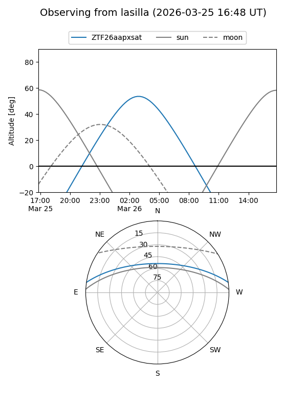
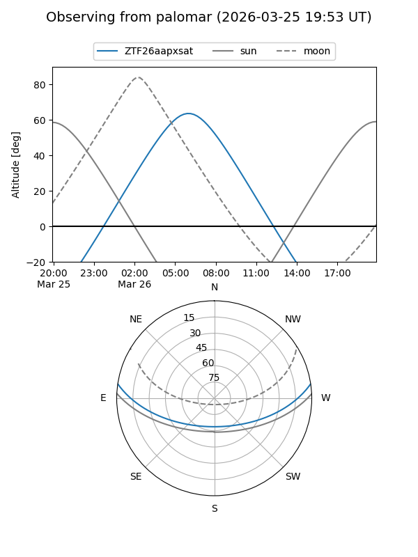

ZTF26aapxsat
Target ZTF26aapxsat at 2026-03-26 08:09
Aliases and brokers:
FINK: link
Lasair: link
ALeRCE: link
alt names
ZTF26aapxsat (ztf,fink_ztf)
Coordinates:
equatorial (ra, dec) = 156.2811,+7.19809
equatorial (HMS+DMS) = 10:25:07.46,+07:11:53.12
galactic (l, b) = (235.9986,+50.01389)
Flags:
Photometry:
last ztfg=19.11
1 ztfg detections
Lightcurve
Visibility


Additional plots